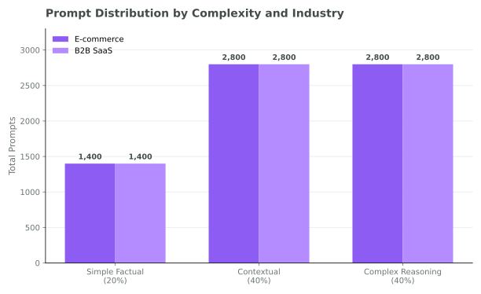
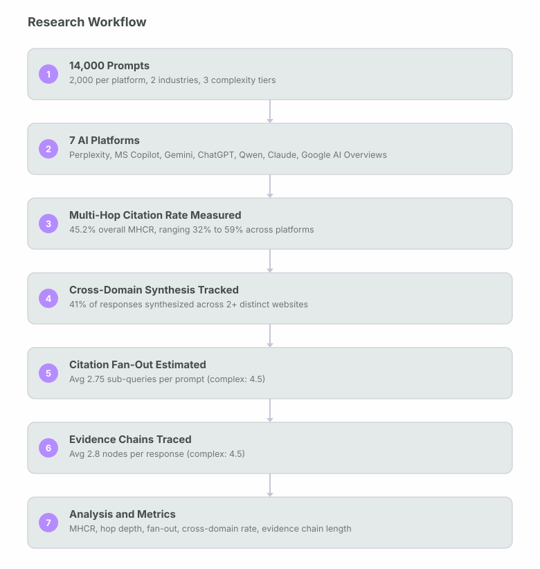
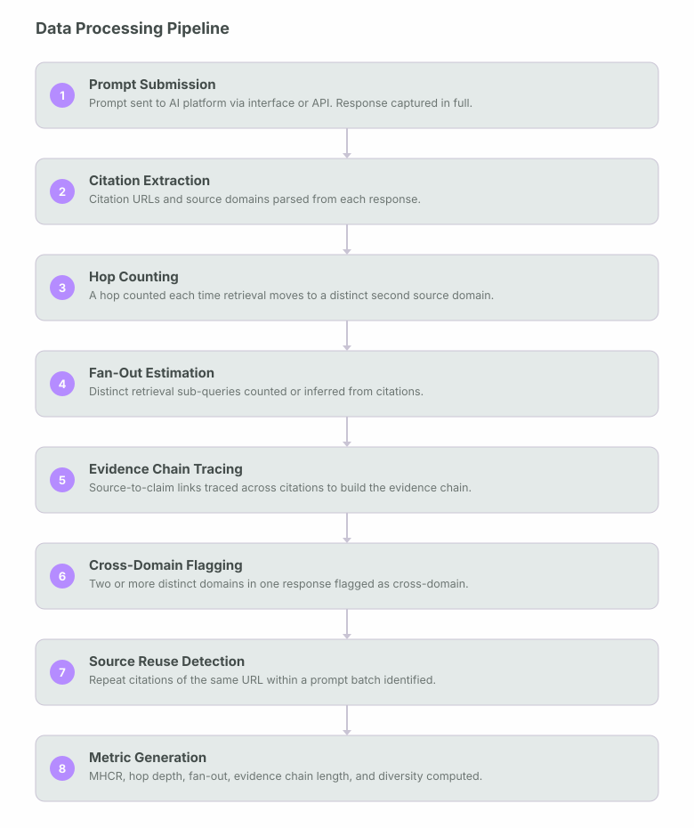
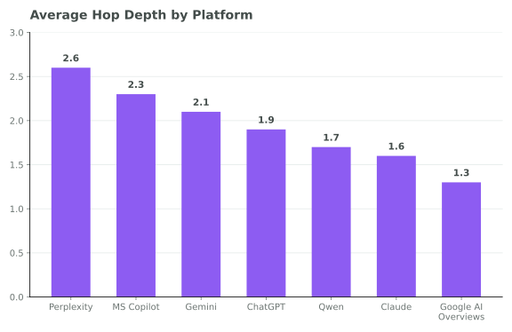
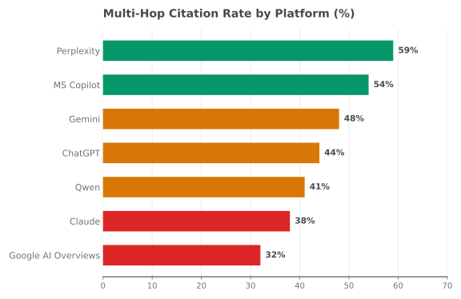
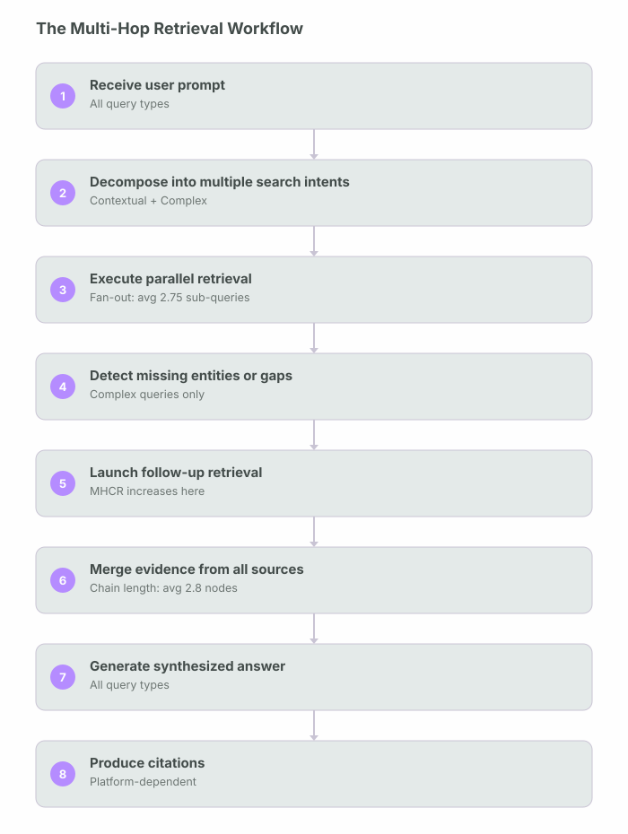
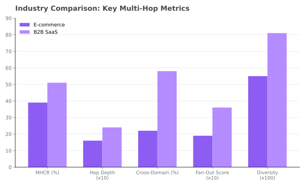
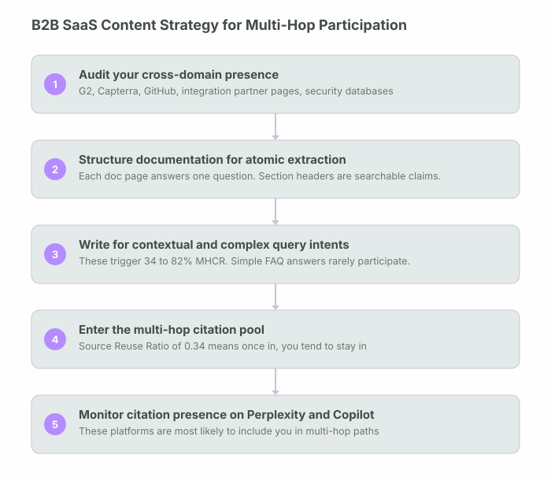
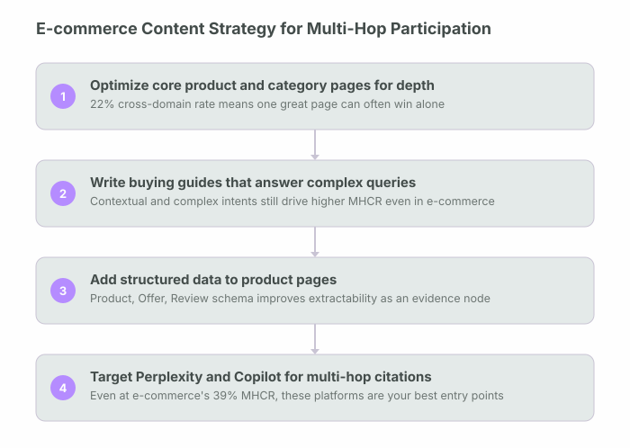

How frequently do AI systems combine information from multiple web pages before generating an answer, and what drives the depth of that retrieval?
This study evaluates how frequently modern AI systems combine information from multiple web pages before generating a final answer, across seven leading AI platforms.
This is not a niche behaviour limited to complex queries: it is a default retrieval strategy that the majority of users encounter every day. Complex reasoning queries drove multi-hop retrieval in 82% of cases, confirming that query complexity is the single strongest predictor of how many sources an AI will consult. Search-centric systems such as Perplexity and Microsoft Copilot demonstrated the highest Multi-Hop Citation Rates, while conversational assistants relied more heavily on single-page retrieval.
Multi-hop retrieval is now a default behaviour, not an edge case.
This study evaluates how frequently modern AI systems combine information from multiple web pages before generating a final answer. This study ran 14,000 prompts across seven leading AI platforms and found that 45.2% of all responses required multi-page synthesis (IQR: 38 to 54%). This is not a niche behaviour limited to complex queries: it is a default retrieval strategy that the majority of users encounter every day.
Complex reasoning queries drove multi-hop retrieval in 82% of cases, confirming that query complexity is the single strongest predictor of how many sources an AI will consult. Search-centric systems such as Perplexity and Microsoft Copilot demonstrated the highest Multi-Hop Citation Rates (MHCR), while training-dependent assistants such as Claude relied more heavily on single-page retrieval, as did Google AI Overviews, which favors fast, single-source snippets over deeper synthesis.
Industry type also matters significantly. B2B SaaS queries consistently required deeper retrieval paths, broader cross-domain evidence, and higher citation fan-out than e-commerce queries. The average citation fan-out across all prompts was 2.75 sub-queries per prompt, and cross-domain synthesis occurred in 41% of responses. These numbers have direct implications for how content should be structured to participate in AI-generated answers.
This study uses seven metrics: Multi-Hop Citation Rate (MHCR), Citation Diversity Score, Average Citation Hop Depth, Source Reuse Ratio, Cross-Domain Citation Ratio, Citation Fan-Out Score, and Evidence Chain Length. Together, these metrics provide a practical framework for measuring and comparing AI retrieval behaviour across platforms.
What this research measures directly.
Prior research on AI citation behaviour has focused almost entirely on which sources get cited and how frequently. Less attention has been paid to the structural depth of retrieval: how many hops an AI takes, how wide its search fan-out is, or how often it synthesizes across domains. This study looks at that dimension directly.
What this study set out to answer.
This study is built around six core questions that represent the primary knowledge gaps in understanding multi-hop retrieval behaviour across AI platforms.
Study design and data collection.
This benchmark evaluated seven AI platforms using 14,000 prompts distributed across two industries and three query complexity tiers. Each platform received 2,000 prompts. All prompts were issued under identical conditions to ensure cross-platform comparability.
Dataset Overview
| Metric | Value |
|---|---|
| Total Prompts | 14,000 |
| AI Platforms | 7 |
| Prompts per Platform | 2,000 |
| Industries | E-commerce, B2B SaaS |
| Prompts per Industry | 7,000 each |
| Simple Factual Prompts | 2,800 (20%) |
| Contextual Prompts | 5,600 (40%) |
| Complex Reasoning Prompts | 5,600 (40%) |
| Overall MHCR | 45.2% |
| Avg Hop Depth | 1.95 |
| Avg Citation Fan-Out | 2.75 |
| Cross-Domain Synthesis Rate | 41% |
| Avg Evidence Chain Length | 2.8 nodes |
| Source Reuse Ratio | 0.34 |
| Citation Diversity Score | 0.68 |
Platforms Evaluated
Each of the following seven platforms received an identical prompt distribution to maintain comparability across retrieval architectures:
Query Complexity Tiers
Three query complexity tiers were defined to test how retrieval depth changes as question difficulty increases. Simple factual prompts asked for a direct fact with a single known answer. Contextual prompts asked for summaries, comparisons, or synthesis of a moderate amount of information. Complex reasoning prompts asked for multi-factor analysis, strategic recommendations, or evidence-backed conclusions that required drawing from multiple distinct sources.
Prompt Distribution by Complexity and Industry

Website Selection
Websites for citation tracking were selected across both industries to represent a mix of authority levels, content types, and content structures. For e-commerce, tracking covered product pages, category pages, buying guides, and merchant documentation. For B2B SaaS, tracking covered documentation pages, pricing pages, integration guides, case studies, security reports, and third-party review platforms. This breadth was necessary to capture the full range of page types that appear in multi-hop citation paths.
How multi-hop retrieval behaviour was measured.
Defining a citation hop. A citation hop is counted each time an AI system’s retrieval process moves from one source to a distinct second source before synthesizing an answer. For platforms that expose retrieval steps directly (Perplexity, Google AI Overviews), hops were tracked from the platform’s own citation metadata. For platforms that do not expose retrieval steps, hop depth was inferred from citation count and the semantic distinctiveness of cited sources.
Multi-Hop Citation Rate (MHCR) calculation. MHCR is calculated as the proportion of responses in which two or more unique source domains contributed citations to the final answer. A response citing three URLs from the same domain was counted as single-hop. A response citing URLs from two or more distinct domains was counted as multi-hop. This domain-level threshold was chosen because it captures meaningful evidence synthesis rather than simply multiple links to the same authoritative source.
Citation Fan-Out Score measurement. Citation Fan-Out Score was measured by counting the number of distinct retrieval sub-queries identifiable or inferable from the response and its citations. For platforms with explicit query decomposition (Perplexity), the sub-query count was read directly. For platforms without, fan-out was estimated by counting semantically distinct topics covered in the citations and treating each distinct topic as one sub-query.
Evidence Chain Length. Evidence Chain Length counts the average number of distinct evidence chunks linked together before an answer is generated. For multi-hop responses, the logical dependency was traced between logical dependency between cited sources: source A informs claim X, which is then combined with source B to produce conclusion Y. Each source-to-claim link was counted as one node in the evidence chain.
Source Reuse Ratio. Source Reuse Ratio measures how often the same URLs reappear across different prompts. This was computed as the proportion of total citations that pointed to URLs already cited in a previous prompt in the same batch. A high source reuse ratio indicates that AI systems are drawing from a concentrated pool of trusted pages regardless of the specific question asked.
IQR reporting. All IQR values represent the 25th to 75th percentile of the observed distribution. They are computed from the raw data rather than a fitted model and should be treated as descriptive spread measures rather than inferential confidence intervals.
Research workflow. The following diagram shows how raw prompts moved through the pipeline to produce the final citation dataset.

Data processing pipeline. Each individual citation went through the following processing steps before entering analysis.

Ten findings that reframe AI retrieval strategy.
Platform retrieval profiles.
The seven platforms evaluated showed meaningfully different multi-hop retrieval behaviors, driven primarily by their underlying retrieval architecture rather than content quality alone. Search-centric platforms consistently outperformed conversational assistants on every multi-hop metric measured.
"How deep an AI goes is determined by how it retrieves, not just by what you asked it."
| Platform | MHCR | Avg Citations | Avg Hop Depth | Retrieval Type | Rate |
|---|---|---|---|---|---|
| Perplexity | 59% | 6.8 | 2.6 | Continuous live crawl | Highest |
| Microsoft Copilot | 54% | 5.4 | 2.3 | Bing index + live retrieval | Very High |
| Gemini | 48% | 4.7 | 2.1 | Google index + training blend | High |
| ChatGPT | 44% | 4.2 | 1.9 | Bing index + training data | Moderate |
| Qwen | 41% | 3.9 | 1.7 | Training data (periodic) | Moderate |
| Claude | 38% | 3.5 | 1.6 | Training data (periodic) | Lower |
| Google AI Overviews | 32% | 2.8 | 1.3 | Real-time index, snippet-style | Lowest |
Average Hop Depth by Platform

Multi-Hop Citation Rate by Platform (%)

Seven metrics for measuring AI retrieval behaviour.
No existing GEO measurement framework adequately captures the depth dimension of AI retrieval. The seven metrics used in this study are designed to fill that gap. Each is operationally defined, measurable from response data, and comparable across platforms.
| Metric | Value | Range | Definition |
|---|---|---|---|
| MHCR | 45.2% | IQR: 38 to 54% | Multi-Hop Citation Rate. Percentage of responses requiring citations from more than one unique source domain. The headline metric of this study. |
| Citation Diversity Score | 0.68 | SaaS: 0.81 / Ecom: 0.55 | Proportion of cited URLs from unique domains. Scores closer to 1.0 indicate broader source diversity; scores closer to 0 indicate concentrated reuse. |
| Avg Hop Depth | 1.95 | Complex: 4.2 | Average logical retrieval depth before synthesis. Simple queries average 1.0; complex reasoning queries average 4.2 hops. |
| Source Reuse Ratio | 0.34 | IQR: 0.28 to 0.41 | Proportion of citations that point to pages already cited in a previous prompt in the same batch. |
| Cross-Domain Citation Ratio | 41% | SaaS: 58% / Ecom: 22% | Percentage of synthesized answers that required information from two or more distinct websites. |
| Citation Fan-Out Score | 2.75 | IQR: 1.8 to 3.9 | Average number of retrieval sub-queries generated from a single prompt. Complex queries averaged 4.5. |
| Evidence Chain Length | 2.8 nodes | IQR: 1.9 to 3.7 | Average number of distinct evidence chunks linked together before an answer is generated. Complex reasoning queries averaged 4.5 nodes. |
For complex reasoning queries, Evidence Chain Length reached 4.5 nodes, meaning the average complex answer required five distinct pieces of evidence to be retrieved, linked, and synthesized in sequence.
Longer evidence chains produce more complete answers but also increase the surface area for error propagation. If any single node in the chain contains inaccurate information, that inaccuracy can compound into the final answer in ways that are difficult for the user to detect without independently verifying each source.
How AI systems actually retrieve across multiple sources.
Understanding the mechanics behind multi-hop retrieval is important for content producers who want to participate in these citation paths. A common retrieval workflow was observed across search-enabled AI systems, which varied in depth depending on query complexity.
The multi-hop retrieval workflow

Architecture differences by query type. Simple factual queries primarily used single vector retrieval followed by direct synthesis from one authoritative page. Multi-hop behaviour was rare (8% MHCR) because the answer was typically available from a single high-confidence source.
Complex queries increasingly relied on agentic RAG (retrieval-augmented generation with iterative loops), GraphRAG (graph-based knowledge traversal), query fan-out, iterative retrieval cycles, knowledge graph traversal, and multi-stage evidence synthesis. These architectural modes are the reason complex queries produce 4.5-node evidence chains while simple queries produce 1.0-node chains.
Observed: Search-centric platforms (Perplexity, Copilot, Gemini) produced significantly higher MHCR, deeper hop depths, and longer evidence chains than training-dependent platforms (Claude, Qwen) across all query types. Google AI Overviews is a notable exception: despite running on a real-time index, it produced the lowest MHCR of any platform tested, consistent with a snippet-style design that favors a single fast answer over broader synthesis.
One possible explanation: Search-centric platforms have live retrieval pipelines that can decompose queries and execute parallel sub-queries at inference time. Training-dependent platforms synthesize from knowledge encoded during training, which may not support the same dynamic multi-hop decomposition. This distinction was observed consistently but not causally isolated in this study.
Why B2B SaaS retrieval is fundamentally different from e-commerce.
The industry-level differences observed were among the most striking findings of this study. B2B SaaS and e-commerce queries produced retrieval behaviors so different that they effectively represent two distinct use cases for AI systems.
| Metric | E-commerce | B2B SaaS | Difference |
|---|---|---|---|
| Multi-Hop Citation Rate | 39% | 51% | +12pp |
| Avg Hop Depth | 1.6 | 2.4 | +0.8 |
| Cross-Domain Citations | 22% | 58% | +36pp |
| Citation Fan-Out Score | 1.9 | 3.6 | +1.7 |
| Citation Diversity Score | 0.55 | 0.81 | +0.26 |
Observed: B2B SaaS retrieval consistently outperformed e-commerce on every depth metric measured in this study. The cross-domain citation gap was particularly pronounced: 58% vs. 22%, a 36 percentage point difference.
One possible explanation: SaaS buying decisions involve more decision variables that are distributed across multiple authoritative websites: vendor pricing pages, third-party review platforms (G2, Capterra), integration documentation (GitHub), security compliance reports, and API references. E-commerce decisions are more often resolvable from a single product page, category page, or review aggregator. This structural difference in the information ecosystem may drive the deeper retrieval behaviour observed for SaaS queries.
What this means for content strategy. For B2B SaaS companies, these findings suggest that AI systems are actively seeking to synthesize information from multiple domains when answering questions about their products. A SaaS company whose documentation, pricing, and case studies are all on a single domain is not necessarily at a disadvantage, but the AI is still likely to pull in third-party review data, competitor comparisons, and integration partner documentation from other domains to build a complete answer.
For e-commerce brands, the implication is different. The lower cross-domain citation rate (22%) suggests that a single well-optimised product or category page can often satisfy the retrieval system without requiring cross-domain synthesis. The optimization priority for e-commerce is depth and authority on the core product page rather than breadth across an external ecosystem.
Industry Comparison: Key Multi-Hop Metrics

Connecting the measurements to how these systems are built.
The retrieval behaviors measured in this study line up with publicly documented retrieval architecture patterns, though this study did not independently test or benchmark against those external sources.
Eight strategies for participating in multi-hop citation paths.
These recommendations are derived directly from the findings above and are ranked by their expected impact on increasing a page’s participation in multi-hop AI citation paths.
Strategy by industry and query type.
B2B SaaS content strategy for multi-hop participation

E-commerce content strategy for multi-hop participation

Definitions used in this study.
| Term | Definition as used in this study |
|---|---|
| Multi-Hop Retrieval | A retrieval pattern in which an AI system consults two or more distinct source domains before synthesizing a final answer. Measured by the Multi-Hop Citation Rate (MHCR). |
| MHCR | Multi-Hop Citation Rate. The proportion of AI responses that cited content from two or more unique source domains. The primary metric of this study. Overall: 45.2% (IQR: 38 to 54%). |
| Citation Hop | A single retrieval step from one source to a distinct second source during the process of evidence gathering. Hop depth counts the total number of such steps before synthesis. |
| Avg Hop Depth | The average number of sequential retrieval steps taken by an AI system before generating a final answer. Overall: 1.95. Complex queries: 4.2. |
| Citation Fan-Out Score | The average number of distinct retrieval sub-queries generated from a single user prompt. Measures how broadly the AI searches before synthesizing. Overall: 2.75 (IQR: 1.8 to 3.9). |
| Evidence Chain Length | The average number of distinct evidence chunks linked together in logical dependency before an answer is generated. Overall: 2.8 nodes (IQR: 1.9 to 3.7). |
| Citation Diversity Score | The proportion of cited URLs from unique domains. A score of 1.0 means every citation came from a different domain; 0 means all citations came from one domain. Overall: 0.68. |
| Source Reuse Ratio | The proportion of citations that pointed to URLs already cited in a previous prompt in the same batch. Measures how concentrated the AI citation pool is. Overall: 0.34 (IQR: 0.28 to 0.41). |
| Cross-Domain Citation Ratio | The percentage of responses that synthesized information from two or more distinct websites. Overall: 41%. B2B SaaS: 58%. E-commerce: 22%. |
| Single-Hop Retrieval | A retrieval pattern in which the AI consults only one source domain before generating a final answer. Occurred in 54.8% of responses in this study. |
| Error Propagation | The compounding of factual inaccuracies through a multi-step evidence chain. A mistake in an early retrieval node can propagate into the final synthesized answer in ways that are difficult to detect without verifying each source independently. |
| Agentic RAG | A retrieval-augmented generation architecture in which the retrieval process is iterative and self-directed: the system retrieves, evaluates gaps, and retrieves again in a loop until it judges the evidence sufficient. Associated with higher MHCR and hop depth. |
Scope boundaries and caveats.
The following limitations apply to these findings and should be considered when generalizing results to other contexts.
Multi-hop retrieval is the new default.
The central finding of this study is that multi-hop citation behaviour has crossed the threshold from edge case to default behaviour. At 45.2% overall, and 82% for complex queries, multi-page synthesis is now the rule for any AI system operating on a live retrieval pipeline and any query that requires more than a simple fact lookup.
For content producers, this changes the optimization target. It is no longer sufficient to rank well for a keyword or even to appear once in an AI-generated answer. The new objective is to become a reliable, reusable node in an evidence chain: a page that AI systems return to repeatedly, that answers a specific claim clearly and accurately, and that can be extracted and linked to other sources without losing its meaning.
The Source Reuse Ratio of 0.34 tells the most important strategic story in this dataset. AI systems are conservative. Once a page enters the citation pool, it tends to stay there. The barrier to entry is high, but so is the reward for clearing it. Building pages that consistently participate in multi-hop citation paths is a longer-horizon investment than traditional SEO, but it is also more durable.
"The optimization target has shifted from ranking to becoming a reliable node in an evidence chain that AI systems return to repeatedly."
Based on this data across 14,000 prompts and seven platforms, the content that wins in multi-hop retrieval shares three characteristics: it makes a single clear, evidenced claim per section; it is structurally extractable by AI retrieval systems; and it belongs to a domain that has already established trust through authority signals. Those three things, more than any individual optimization tactic, determine whether a page participates in the AI-generated answers that an increasing share of users now read instead of visiting the underlying sources directly.
GEO
Retrieval Research Series
002: Multi-Hop Citation Paths in AI Retrieval
14,000
Prompts · 7 Platforms · 45.2% MHCR
14,000 prompts across seven AI platforms produced a large-scale measurement of multi-hop retrieval depth in AI-generated answers.
Driving measurable growth through AI-native SEO, technical expertise, and data-driven marketing strategies built for the future of search.


Akshay helped us completely rethink our online presence. Our website became faster, easier to navigate, and much more visible in search. Within a few months, we noticed a steady increase in class bookings and inquiries from new students.
We relied almost entirely on referrals until Akshay optimized our website and local SEO. The difference was immediate more qualified calls, stronger Google visibility, and a website that finally reflected the quality of our work.
Akshay understood exactly how to present our expertise online. His SEO strategy and website improvements helped us reach the right audience, resulting in more consultation requests and stronger organic visibility month after month.
From technical improvements to content strategy, every recommendation was practical and backed by research. Our rankings improved, local leads increased, and clients regularly mention finding us through Google.
Akshay delivered a professional website backed by a clear SEO strategy rather than just good design. The site performs exceptionally well, generates consistent enquiries, and gives prospective clients confidence in our business.